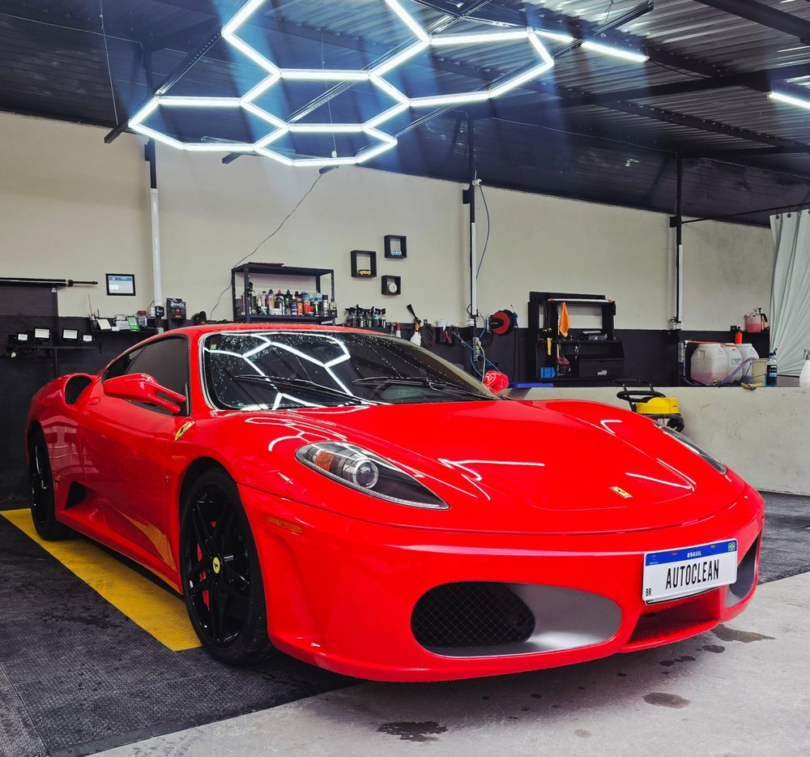
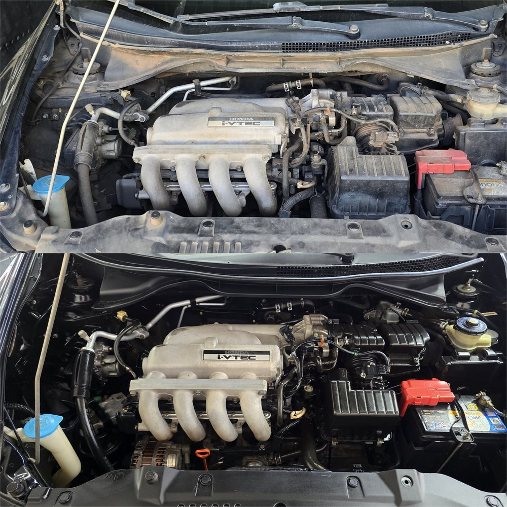
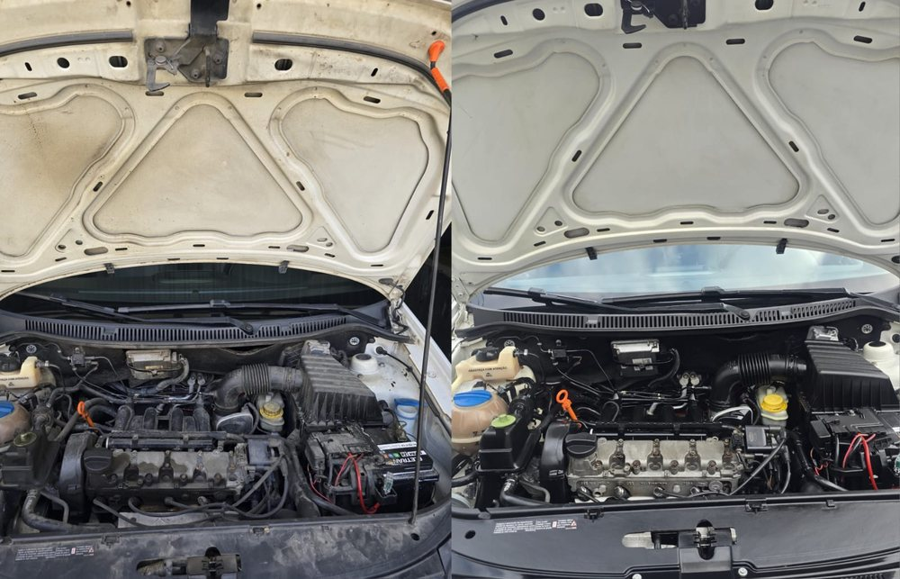
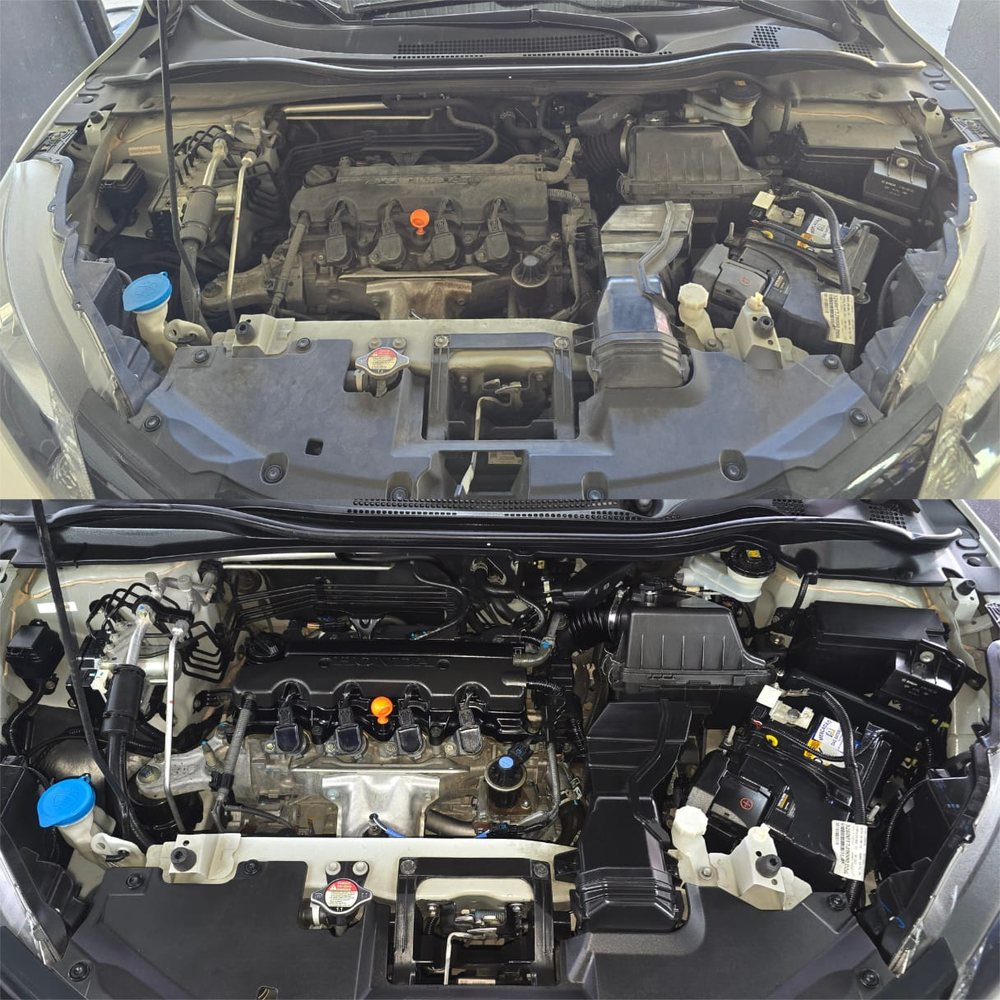
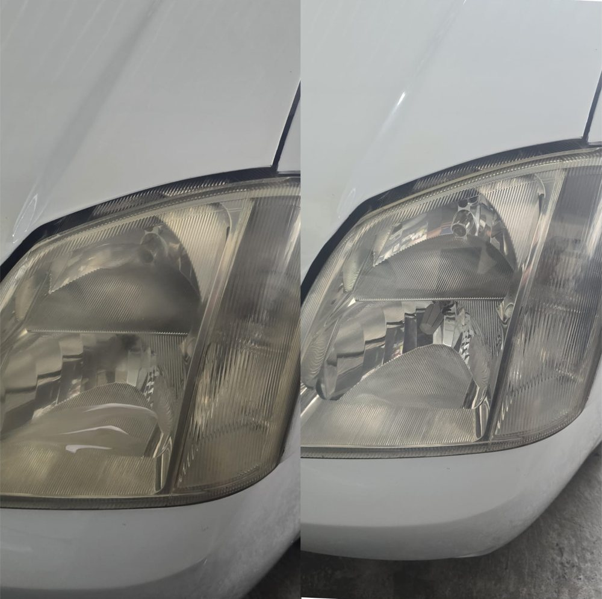
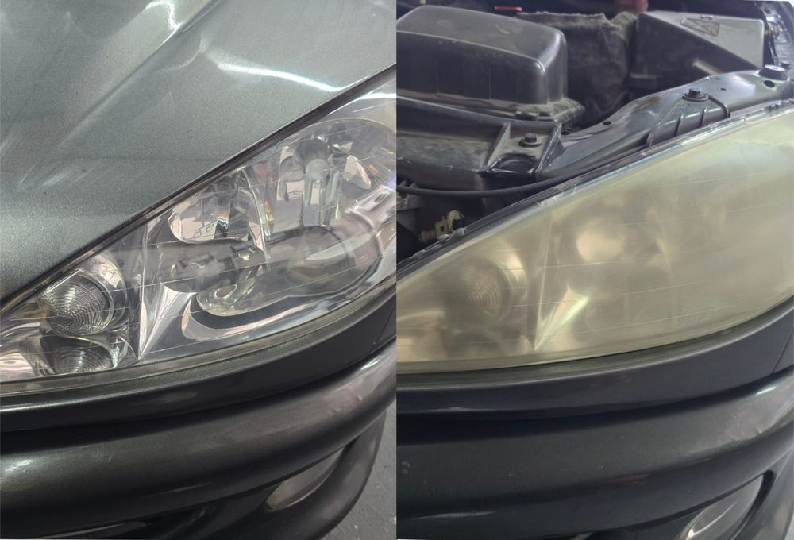
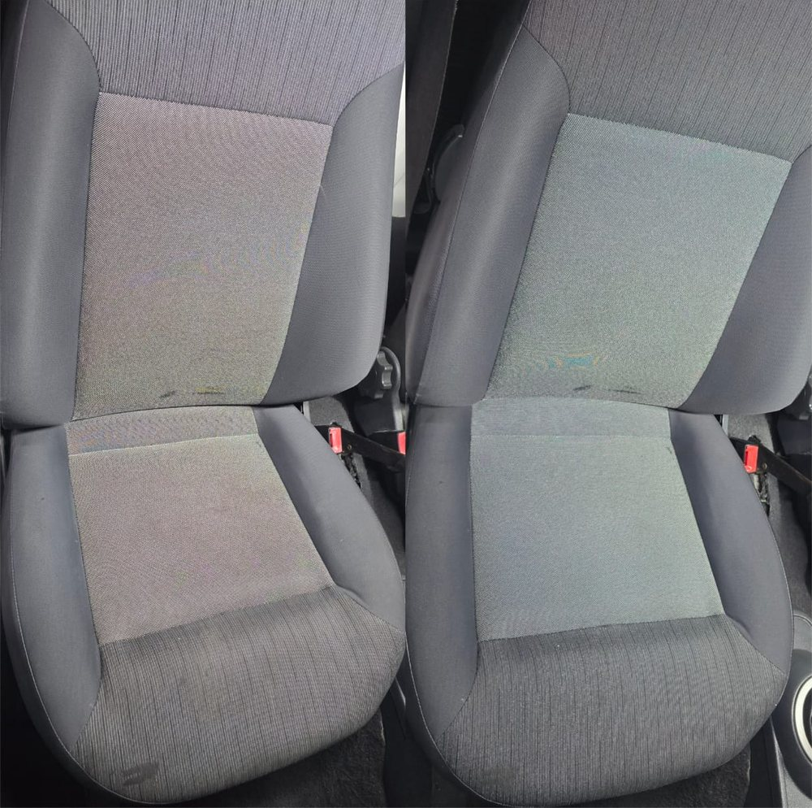

“Sem dúvidas, a melhor lavação da região! Serviço de altíssimo padrão, preço justo e atendimento nota 10. Dá para ver que trabalham com produtos de qualidade e têm muito cuidado em cada detalhe.”
Limpeza, polimento e proteção para o seu carro.

Mais do que limpeza, cuidado, valorização e proteção para o seu veículo!
Na AutoClean, unimos técnica, produtos de qualidade e atenção aos detalhes para entregar um acabamento impecável e resultados que fazem a diferença.
Para carros
- Lavações tradicionais e detalhadas
- Polimento comercial e técnico
- Vitrificação e proteção da pintura
- Higienização interna completa
- Higienização e hidratação de bancos
Para motos
- Lavações em 2 níveis de detalhamento
Seu veículo merece um tratamento diferenciado!
AutoClean Joinville: excelência em cada detalhe, qualidade em cada entrega.
Serviços
Todos os serviços do catálogo, por linha. Para saber o valor, peça um orçamento pelo WhatsApp informando o porte do veículo.
Lavação
Limpeza nível IPreteador nos pneus
- Aspiração e limpeza dos tapetes, carpetes e bancos
- Limpeza do painel, forros de portas e console
- Limpeza dos vidros internos
- Limpeza dos plásticos internos
Proteção
- Preteador nos pneus
Limpeza nível IICera de proteção
- Aspiração e limpeza dos tapetes, carpetes e bancos
- Limpeza do painel, forros de portas e console
- Limpeza dos plásticos internos
- Limpeza dos vidros internos
Proteção
- Revitalizador de plásticos externos
- Revitalizador de plásticos internos
- Cera de proteção
- Selante nos pneus
Limpeza nível IIICera de proteção
- Aspiração e limpeza dos tapetes, carpetes e bancos
- Limpeza do painel, forros de portas e console
- Limpeza do volante e chave de seta
- Limpeza dos plásticos internos
- Limpeza dos vidros internos
- Limpeza dos pedais
Proteção
- Revitalizador de plásticos externos
- Revitalizador de plásticos internos
- Impermeabilizador dos espelhos
- Cera de proteção
- Impermeabilizador do parabrisa
- Impermeabilizador dos vidros
- Selante nos pneus
Limpeza técnica de motor
Limpeza técnica de motorDeixe o motor do seu veículo limpo, protegido e com aparência de novo!
Nossa lavação de motor é realizada com produtos específicos para limpeza automotiva, proporcionando um acabamento impecável e cuidado com os componentes.
O que está incluso no serviço
- Proteção dos componentes elétricos e eletrônicos sensíveis.
- Aplicação de desengraxante automotivo para remoção de óleo, graxa e sujeiras acumuladas.
- Limpeza detalhada do cofre do motor, mangueiras, plásticos e demais componentes acessíveis.
- Remoção cuidadosa dos resíduos e secagem.
- Aplicação de imunizador e protetor de motor, auxiliando na conservação das peças.
- Finalização com verniz automotivo específico para motor, proporcionando brilho, proteção e aspecto renovado.
Polimentos
Polimento comercial
Limpeza
- Lavação Tradicional
Processos
- Descontaminação de pintura
- Isolamento de áreas sensíveis
- Correção e nivelamento do verniz
- Remoção de riscos profundos
- Remoção de riscos superficiais
- Regeneração de brilho intenso
Proteção
- Revitalizador de plásticos externos
- Revitalizador de plásticos internos
- Cera de proteção
- Impermeabilizador do parabrisa
- Impermeabilizador dos vidros
- Selante nos pneus
Polimento técnicoCera de proteção
Limpeza
- Lavação Detalhada
Processos
- Descontaminação de pintura
- Isolamento de áreas sensíveis
- Correção e nivelamento do verniz
- Remoção de riscos profundos
- Remoção de riscos superficiais
- Regeneração de brilho intenso
Proteção
- Revitalizador de plásticos externos
- Revitalizador de plásticos internos
- Cera de proteção
- Impermeabilizador do parabrisa
- Impermeabilizador dos vidros
- Selante nos pneus
Polimento dos faróis
Limpeza
- Lavação Tradicional
Processos
- Isolamento de áreas sensíveis
- Correção e nivelamento do farol
- Remoção de riscos profundos
- Remoção de riscos superficiais
- Regeneração de brilho intenso
Proteção
- Garantia de 3 meses
Proteções
VitrificaçãoVitrificador de proteção
Limpeza
- Limpeza nível III
Processos
- Descontaminação de pintura
- Polimento técnico
Proteção
- Revitalizador de plásticos externos
- Revitalizador de plásticos internos
- Impermeabilizador dos espelhos
- Vitrificador de proteção
- Impermeabilizador do parabrisa
- Impermeabilizador dos vidros
- Selante nos pneus
Higienizações
Higienização nível IA higienização é realizada sem a remoção dos bancos e carpetes, garantindo praticidade e limpeza eficiente para o interior do seu veículo!
- Aspiração e limpeza dos tapetes, carpetes e bancos
- Limpeza dos carpetes com antibactericida
- Limpeza dos bancos com antibactericida
- Limpeza do quebra-sol, colunas, console
- Remoção de manchas dos bancos
- Limpeza dos plásticos internos
- Remoção de odores internos
- Limpeza dos vidros internos
- Painel e forros de portas
- Limpeza das borrachas
- Limpeza do teto
Proteção
- Revitalizador de plásticos
- Cera de proteção
- Selante nos pneus
Higienização nível IIA higienização é realizada com a remoção dos bancos e carpetes, permitindo uma limpeza mais profunda e completa do interior do seu veículo!
- Aspiração e limpeza dos tapetes, carpetes e bancos
- Limpeza dos carpetes com antibactericida
- Limpeza dos bancos com antibactericida
- Limpeza do quebra-sol, colunas, console
- Remoção de manchas dos bancos
- Limpeza dos plásticos internos
- Remoção de odores internos
- Limpeza dos vidros internos
- Painel e forros de portas
- Limpeza das borrachas
- Limpeza do teto
Motos
Limpeza nível I
Lavação
- Lavagem externa com snow foam
- Limpeza dos plásticos e das borrachas
- Limpeza das rodas
- Limpeza da corrente
- Limpeza da suspensão
- Limpeza da carenagem
- Limpeza da bolha
- Limpeza do banco
- Proteção básica dos plásticos
- Limpeza detalhada do escapamento
Proteção
- Revitalizador de plásticos externos
- Aplicação de verniz no motor
Limpeza nível II
Lavação
- Lavagem com snow foam
- Limpeza dos plásticos e das borrachas
- Limpeza detalhada das rodas
- Limpeza detalhada da parte interna das rodas
- Limpeza detalhada da corrente
- Limpeza detalhada da suspensão
- Limpeza detalhada da carenagem
- Limpeza detalhada da bolha
- Limpeza do banco
- Proteção básica dos plásticos
- Limpeza detalhada do escapamento
Proteção
- Revitalizador de plásticos externos
- Aplicação de verniz no motor
Trabalhos reais
Fotos de serviços feitos na AutoClean. Toque em uma imagem para ampliar.

AntesDepois
AntesDepois
AntesDepois
AntesDepois
DepoisAntes
“Melhor lugar para dar um trato no seu carro.”
“Excelente atendimento, rápidos e fazem um trabalho muito bom e o preço é justo. Fiz lavação do motor, higienização interna dos bancos, lavação interna e externa e polimento, serviço de qualidade!”
“Umas das melhores estéticas automotivas que já levei! Muito capricho! O dono Tiago é muito gente boa! Fez além do que eu pedi! Top!”
Peça seu orçamento
Informe o serviço e o porte do veículo. O WhatsApp abre com a mensagem pronta para a equipe responder.
Ou chame direto: (47) 99267-6589
Localização
AutoClean Joinville, em Joinville, SC. Para combinar o dia e o horário do atendimento, chame no WhatsApp.
Serviços Finalizados
Alguns dos veículos que passaram pela AutoClean Joinville. Cada detalhe recebe cuidado e atenção.